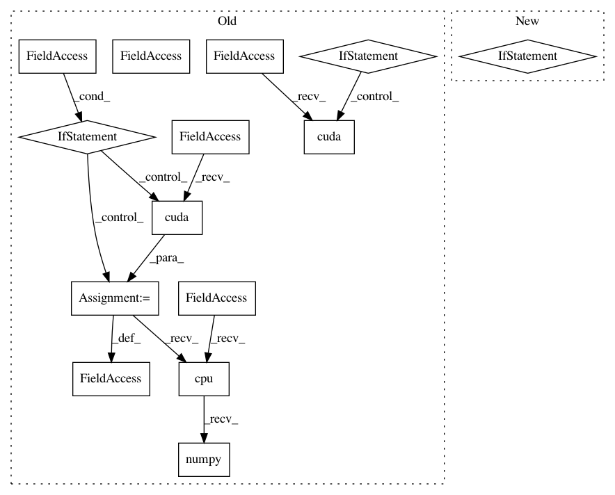

7a6e3b93fb4b97af7b06244b768b1fee4b547c17,ch12/train_crossent.py,,,#,41
Before Change
net = model.PhraseModel(emb_size=model.EMBEDDING_DIM, dict_size=len(emb_dict),
hid_size=model.HIDDEN_STATE_SIZE)
if args.cuda:
net.cuda()
log.info("Model: %s", net)
writer = SummaryWriter(comment="-" + args.name)
optimiser = optim.Adam(net.parameters(), lr=LEARNING_RATE)
best_bleu = None
for epoch in range(MAX_EPOCHES):
losses = []
bleu_sum = 0.0
bleu_count = 0
for batch in data.iterate_batches(train_data, BATCH_SIZE):
optimiser.zero_grad()
input_seq, out_seq_list, _, out_idx = model.pack_batch(batch, net.emb,
cuda=args.cuda)
enc = net.encode(input_seq)
net_results = []
net_targets = []
for idx, out_seq in enumerate(out_seq_list):
ref_indices = out_idx[idx][1:]
enc_item = net.get_encoded_item(enc, idx)
if random.random() < TEACHER_PROB:
r = net.decode_teacher(enc_item, out_seq)
bleu_sum += model.seq_bleu(r, ref_indices)
else:
r, seq = net.decode_chain_argmax(enc_item, out_seq.data[0:1],
len(ref_indices))
bleu_sum += utils.calc_bleu(seq, ref_indices)
net_results.append(r)
net_targets.extend(ref_indices)
bleu_count += 1
results_v = torch.cat(net_results)
targets_v = Variable(torch.LongTensor(net_targets))
if args.cuda:
targets_v = targets_v.cuda()
loss_v = F.cross_entropy(results_v, targets_v)
loss_v.backward()
optimiser.step()
losses.append(loss_v.data.cpu().numpy()[0])
bleu = bleu_sum / bleu_count
bleu_test = run_test(test_data, net, end_token, args.cuda)
log.info("Epoch %d: mean loss %.3f, mean BLEU %.3f, test BLEU %.3f",
After Change
help="Enable cuda")
parser.add_argument("-n", "--name", required=True, help="Name of the run")
args = parser.parse_args()
device = torch.device("cuda" if args.cuda else "cpu")
saves_path = os.path.join(SAVES_DIR, args.name)
os.makedirs(saves_path, exist_ok=True)
In pattern: SUPERPATTERN
Frequency: 3
Non-data size: 14
Instances
Project Name: PacktPublishing/Deep-Reinforcement-Learning-Hands-On
Commit Name: 7a6e3b93fb4b97af7b06244b768b1fee4b547c17
Time: 2018-04-29
Author: max.lapan@gmail.com
File Name: ch12/train_crossent.py
Class Name:
Method Name:
Project Name: PacktPublishing/Deep-Reinforcement-Learning-Hands-On
Commit Name: d5b0cd8e7960c247bb7c5b7c832358f8831780fb
Time: 2018-04-29
Author: max.lapan@gmail.com
File Name: ch15/03_train_trpo.py
Class Name:
Method Name:
Project Name: PacktPublishing/Deep-Reinforcement-Learning-Hands-On
Commit Name: cbcc3f315c653706ceded6ba42f222616322a3f2
Time: 2018-04-25
Author: max.lapan@gmail.com
File Name: ch03/03_atari_gan.py
Class Name:
Method Name: